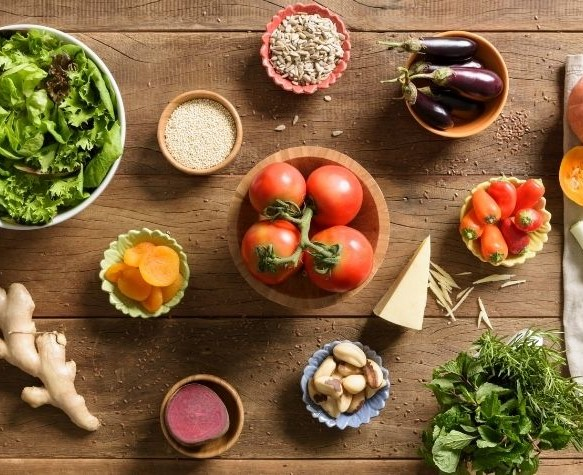
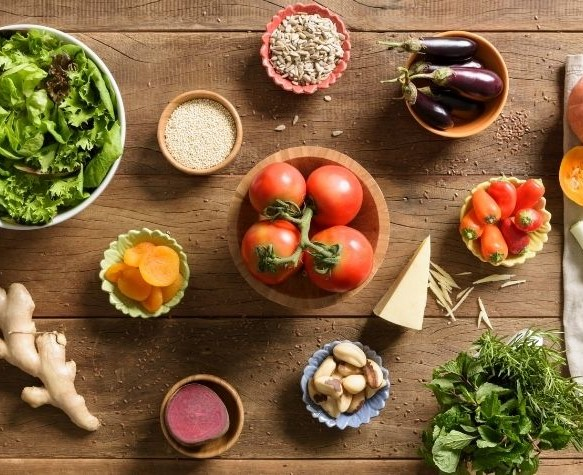

About Recipix
Recipix is an innovative AI-powered system designed to reduce food waste and simplify meal planning. By combining computer vision and natural language processing (NLP), Recipix recognizes ingredients in fridge or pantry images, generating personalized recipe suggestions based on your dietary preferences, allergies, and available items. From advanced model training to real-time interaction, here’s what makes Recipix a cutting-edge solution:
Recipix Diagram
Comprehensive AI System Design: Led the development of Recipix by implementing a multimodal AI approach, leveraging both computer vision and NLP for real-time ingredient detection and recipe recommendation.
Advanced Computer Vision: Developed and optimized ResNet-50, YOLO, and Segment Anything Model (SAM) frameworks to achieve over 81% classification accuracy across 88 diverse food categories.
Extensive Dataset Curation: Curated and expanded a dataset with over 41,000 images, ensuring a robust and diverse collection for training and evaluation, including advanced image augmentation techniques (rotation, scaling, flipping) for model generalization.
Precision Recipe Recommendations: Built a powerful recommendation engine using SpaCy, Word2Vec, TF-IDF, and LDA to match detected ingredients with a comprehensive recipe database, integrating user dietary preferences, allergies, and food likes/dislikes to deliver highly personalized meal plans.
Innovative NLP Models and Learning Techniques: Fine-tuned TF-IDF and Non-Negative Matrix Factorization (NMF) models, providing recommendations that cater to a variety of user-specific needs, from vegan to gluten-free.
System Diagram of Recipix Components and Flow
Efficient Backend Architecture: Created a scalable backend using Django and PostgreSQL to manage recipe data, user preferences, and ingredient classifications, while Docker and Celery with Redis improve processing speed and efficiency.
Optimized Processing Pipelines: By utilizing NVIDIA GPU acceleration (CUDA), processing times were reduced from 5 minutes to just 5 seconds, allowing Recipix to handle large volumes of data without latency issues.
User's Fridge Image
Segmented Ingredients with SAM
Automated Data Collection: Implemented automated web scraping using BeautifulSoup and Selenium to populate the recipe database, ensuring up-to-date and varied recipe suggestions.
Enhanced Food Recognition: Developed custom image segmentation algorithms with OpenCV and SAM, enabling accurate food item detection even in complex scenes like overlapping objects.
Ingredients Classified Using CNN
User-Friendly Recipe Visualization: Integrated DALL·E API to generate PDFs with visual meal suggestions, creating a more interactive and engaging experience for users.
Generated Recipe PDF Based on Detected Ingredients
Comprehensive Documentation and Guides: Developed in-depth technical documentation and user guides, making it easy for developers and stakeholders to understand the system architecture and API integrations.
Recipix showcases how AI can transform food management by reducing waste, improving meal planning, and providing a seamless, user-centric experience.

 
